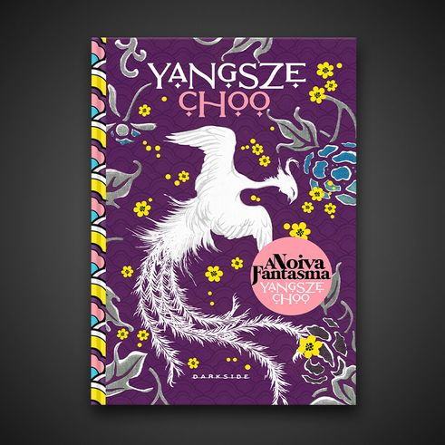

Até que a morte os aproxime “Certa noite, meu pai me perguntou se eu gostaria de me tornar uma noiva fantasma...” 1893. Li Lan é uma jovem que recebeu educação e cultura, mas que vive sem grandes perspectivas depois da falência de seus pais. Até surgir uma proposta capaz de mudar sua vida para sempre: casar-se com o herdeiro de uma família rica e poderosa. Há apenas um detalhe: seu noivo está morto. A Noiva Fantasma, que a DarkSide Books publica no Brasil em 2015, é o surpreendente romance de estreia de Yangsze Choo, a escritora de ascendência oriental que está encantando fãs por todo o mundo. Por mais fantásticas que pareçam, as noivas fantasmas ainda resistem até hoje em parte da cultura asiática. A prática, que chegou a ser banida por Mao Tsé-Tung durante a Revolução Cultural, foi muito frequente na China e na Malaia (hoje Malásia) no final do século XIX. O casamento era usado para tranquilizar um espírito inquieto, e garantir um lar e estabilidade para as mulheres que diziam sim a maridos já falecidos. É claro que elas tinham um preço alto a pagar, e com Li Lan não seria diferente. Evocando obras como Lugar Nenhum, de Neil Gaiman, A Noiva Fantasma é uma história impressionante sobre o amor sobrenatural e sobre o amadurecimento, escrita por uma extraordinária nova voz da ficção contemporânea. Eleito o Livro da Semana pela Oprah.com, entrou em diversas listas de melhores livros do ano, como Indie Next List’s Pick, Glamour Magazine Beach Read, The Bookseller Editor's Pick e Library Journal Barbara's Pick.